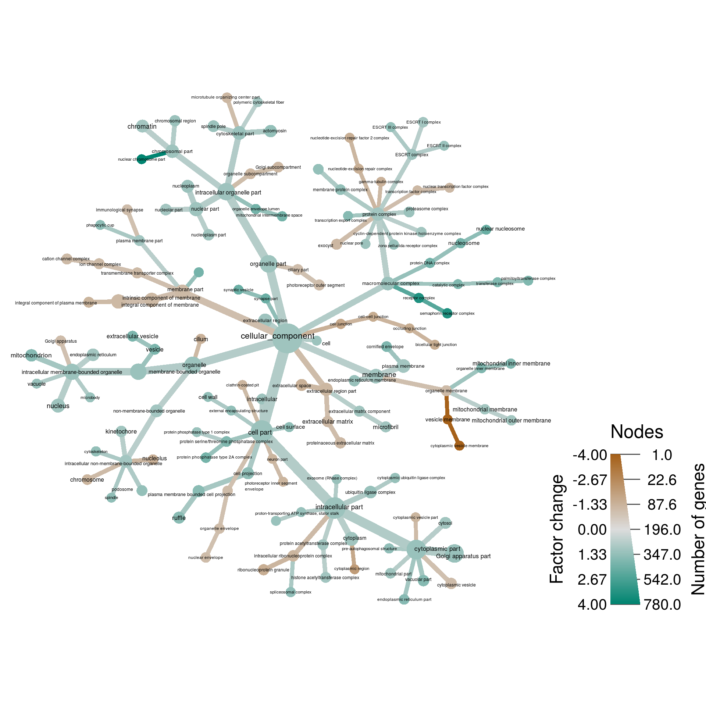
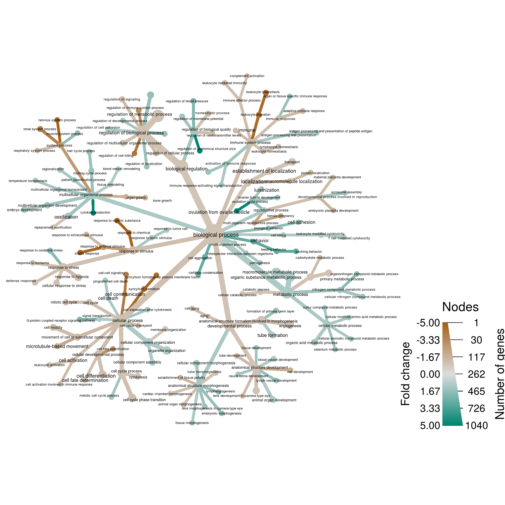
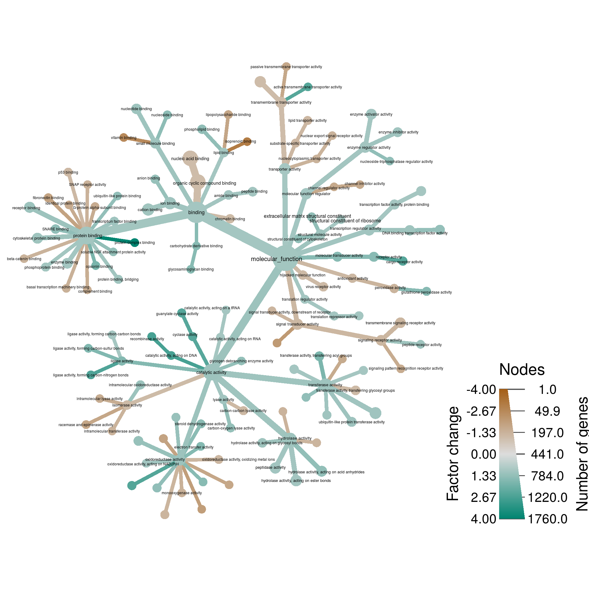

Human gene expression
Parameters
Analysis input/output
input_folder <- "raw_input" # Where all the large input files are. Ignored by git.
output_folder <- "results" # Where plots will be saved
output_format <- "pdf" # The file format of saved plots
pub_fig_folder <- "publication"
revision_n <- 1
result_path <- function(name) {
file.path(output_folder, paste0(name, ".", output_format))
}
save_publication_fig <- function(name, figure_number) {
file.path(result_path(name), paste0("revision_", revision_n), paste0("figure_", figure_number, "--", name, ".", output_format))
}Analysis settings
min_p_value <- 0.05Introduction
Dependencies
This analysis requires Bioconductor packages to work. These packages are not available on CRAN and must be installed using the following code. The code below is not run during the compilation of this page, but is provided so others can quickly find the right software to replicate this analysis.
source("https://bioconductor.org/biocLite.R")
source("http://bioconductor.org/workflows.R")workflowInstall("rnaseqGene")
biocLite("GO.db")
biocLite("org.Hs.eg.db")
biocLite("airway")
biocLite("DESeq2")Read in data
Starting from SummarizedExperiment
http://www.bioconductor.org/help/workflows/rnaseqGene/
library(rnaseqGene)
library("airway")
data("airway")
se <- airwayse$dex <- relevel(se$dex, "untrt")
se$dex## [1] untrt trt untrt trt untrt trt untrt trt
## Levels: untrt trt
library("DESeq2")
dds <- DESeqDataSet(se, design = ~ cell + dex)Pre-filtering the dataset
nrow(dds)## [1] 64102
dds <- dds[ rowSums(counts(dds)) > 1, ]
nrow(dds)## [1] 29391
The rlog transformation
rld <- rlog(dds, blind=FALSE)
head(assay(rld), 3)## SRR1039508 SRR1039509 SRR1039512 SRR1039513 SRR1039516 SRR1039517 SRR1039520
## ENSG00000000003 9.385683 9.052608 9.516875 9.285338 9.839085 9.530311 9.663255
## ENSG00000000419 8.869616 9.138271 9.036116 9.075295 8.972126 9.131824 8.861534
## ENSG00000000457 7.961369 7.881385 7.824079 7.921490 7.751699 7.886441 7.957121
## SRR1039521
## ENSG00000000003 9.277699
## ENSG00000000419 9.060905
## ENSG00000000457 7.912123
Differential expression analysis
dds <- estimateSizeFactors(dds)
dds <- DESeq(dds)## using pre-existing size factors## estimating dispersions## gene-wise dispersion estimates## mean-dispersion relationship## final dispersion estimates## fitting model and testing(res <- results(dds))## log2 fold change (MLE): dex trt vs untrt
## Wald test p-value: dex trt vs untrt
## DataFrame with 29391 rows and 6 columns
## baseMean log2FoldChange lfcSE stat pvalue padj
## <numeric> <numeric> <numeric> <numeric> <numeric> <numeric>
## ENSG00000000003 708.6021697 -0.38125388 0.1006560 -3.7876928 0.0001520527 0.001281516
## ENSG00000000419 520.2979006 0.20681271 0.1122218 1.8428925 0.0653447023 0.196230403
## ENSG00000000457 237.1630368 0.03792050 0.1434532 0.2643405 0.7915175170 0.911219223
## ENSG00000000460 57.9326331 -0.08816322 0.2871677 -0.3070095 0.7588361136 0.894672849
## ENSG00000000938 0.3180984 -1.37823397 3.4998753 -0.3937952 0.6937322727 NA
## ... ... ... ... ... ... ...
## ENSG00000273485 1.2864477 -0.1271363 1.6005571 -0.07943253 0.9366886 NA
## ENSG00000273486 15.4525365 -0.1509944 0.4865490 -0.31033758 0.7563043 0.8936787
## ENSG00000273487 8.1632350 1.0464169 0.6990336 1.49694792 0.1344068 0.3291460
## ENSG00000273488 8.5844790 0.1078190 0.6381646 0.16895172 0.8658346 0.9451750
## ENSG00000273489 0.2758994 1.4837258 3.5139452 0.42223933 0.6728503 NA
Converting ENSEMBL IDs to GO IDs
library(GO.db)
library(org.Hs.eg.db)
res$go_id <- mapIds(org.Hs.eg.db,
keys=rownames(res),
column="GO",
keytype="ENSEMBL",
multiVals="first")## 'select()' returned 1:many mapping between keys and columnsFitlering results
Remove genes with no GO annotation
nrow(res)## [1] 29391
res <- res[!is.na(res$go_id), ]
res <- res[res$go_id %in% keys(org.Hs.eg.db, keytype = "GO"), ]
nrow(res)## [1] 15514
Remove insignificant genes
nrow(res)
res <- res[(! is.na(res$padj)) & res$padj <= 0.05, ]
nrow(res)Remove genes with small changes
nrow(res)
res <- res[abs(res$log2FoldChange) >= 0.5, ]
nrow(res)Getting classificaiton
term_class <- function(x, current = x, all_paths = TRUE, type = GOCCPARENTS, verbose = TRUE,
valid_relationships = c("is_a")) {
# Get immediate children of current taxon
parents = tryCatch({
possible_parents <- as.list(type[x[1]])[[1]]
if (! is.null(valid_relationships)) {
possible_parents <- possible_parents[names(possible_parents) %in% valid_relationships]
}
names(AnnotationDbi::Term(possible_parents))
}, error = function(e) {
c()
})
# only go down one path if desired
if (! all_paths) {
parents <- parents[1]
}
parents <- parents[parents != "all"]
if (is.null(parents)) {
return(c())
} else if (length(parents) == 0) {
return(paste0(collapse = "|", AnnotationDbi::Term(x)))
} else {
next_x <- lapply(parents, function(y) c(y, x))
# Run this function on them to get their output
child_output <- lapply(next_x, term_class, all_paths = all_paths, type = type)
output <- unlist(child_output, recursive = FALSE)
return(output)
}
}cc_class <- lapply(res$go_id, term_class, all_paths = FALSE, type = GOCCPARENTS)
mf_class <- lapply(res$go_id, term_class, all_paths = FALSE, type = GOMFPARENTS)
bp_class <- lapply(res$go_id, term_class, all_paths = FALSE, type = GOBPPARENTS)Cellular component
cc_res <- res[rep(1:nrow(res), sapply(cc_class, length)), ]
cc_res$class <- unlist(cc_class)
library(metacoder)
obj <- parse_tax_data(as.data.frame(cc_res), class_cols = "class", class_sep = "|")
obj$funcs <- c(obj$funcs,
change = function(x, subset = NULL) {
vapply(obs(x, "tax_data"),
function(i) {
obs_change <- obj$data$tax_data[i, ]$log2FoldChange[obj$data$tax_data[i, ]$padj <= min_p_value]
mean(obs_change, na.rm = TRUE)
},
numeric(1))
},
num_changed = function(x, subset = NULL) {
vapply(obs(x, "tax_data"),
function(i) {
sum(obj$data$tax_data[i, ]$padj <= min_p_value, na.rm = TRUE)
},
numeric(1))
})set.seed(3)
obj %>%
filter_taxa(num_changed > 0) %>%
filter_taxa(n_supertaxa <= 4) %>%
# filter_taxa(n_supertaxa >= 1) %>%
# filter_taxa(nchar(taxon_names) <= 40) %>%
heat_tree(node_label = ifelse(nchar(taxon_names) <= 50, taxon_names, ""),
node_size = num_changed,
# node_size_trans = "log10",
node_size_range = c(0.01, 0.03),
# node_label_size_trans = "log10",
node_label_size_range = c(0.01, 0.02),
# edge_size_trans = "log10",
edge_size_range = c(0.008, 0.03) / 2,
node_color = 2^abs(change) * sign(change),
node_color_trans = "linear",
node_color_range = diverging_palette(),
node_color_interval = c(-4, 4),
# edge_color_trans = "linear",
# edge_color_range = diverging_palette(),
# edge_color_interval = c(-4, 4),
# node_label_max = 500,
node_color_axis_label = "Factor change",
node_size_axis_label = "Number of genes",
layout = "da", initial_layout = "re",
output_file = result_path("gene_expression--cellular_component"))
Biological Process
bp_res <- res[rep(1:nrow(res), sapply(bp_class, length)), ]
bp_res$class <- unlist(bp_class)
library(metacoder)
obj <- parse_tax_data(as.data.frame(bp_res), class_cols = "class", class_sep = "|")
obj$funcs <- c(obj$funcs,
change = function(x, subset = NULL) {
vapply(obs(x, "tax_data"),
function(i) {
obs_change <- obj$data$tax_data[i, ]$log2FoldChange[obj$data$tax_data[i, ]$padj <= min_p_value]
mean(obs_change, na.rm = TRUE)
},
numeric(1))
},
num_changed = function(x, subset = NULL) {
vapply(obs(x, "tax_data"),
function(i) {
sum(obj$data$tax_data[i, ]$padj <= min_p_value, na.rm = TRUE)
},
numeric(1))
})set.seed(7) #2, 4, 5, 7*, 19
mgsub <- function(pattern, replacement, x, ...) { # from: http://stackoverflow.com/questions/15253954/replace-multiple-arguments-with-gsub
if (length(pattern)!=length(replacement)) {
stop("pattern and replacement do not have the same length.")
}
result <- x
for (i in 1:length(pattern)) {
result <- gsub(pattern[i], replacement[i], result, ...)
}
result
}
to_replace <- matrix(ncol = 2, byrow = TRUE,
c("regulation of growth", "",
"activation of innate immune response", "",
"system development", "",
"regulation of response to stimulus", "",
"lipid metabolic process", "",
"selenium compound metabolic process", "selenium metabolic process"
))
output_path <- file.path(output_folder,
paste0("gene_expression--biological_process",
output_format))
obj %>%
filter_taxa(num_changed > 0) %>%
filter_taxa(n_supertaxa <= 3) %>%
mutate_obs("plot_data",
taxon_id = taxon_ids,
plotted_name = gsub("_", " ", taxon_names),
f_change = 2^abs(change) * sign(change)) %>%
mutate_obs("plot_data",
short_name = vapply(plotted_name, FUN.VALUE = character(1), function(x) {
mgsub(pattern = to_replace[, 1], replacement = to_replace[, 2], x, fixed = TRUE)
})) %>%
heat_tree(node_label = ifelse(abs(f_change) > 1, short_name, NA),
node_size = num_changed,
# node_size_trans = "log10",
node_size_range = c(0.008, 0.03),
# node_label_size_trans = "log10",
node_label_size_range = c(0.012, 0.02),
# edge_size_trans = "log10",
edge_size_range = c(0.008, 0.03) / 2,
node_color = f_change,
node_color_trans = "linear",
node_color_range = diverging_palette(),
node_color_interval = c(-5, 5),
edge_color_trans = "linear",
edge_color_range = diverging_palette(),
edge_color_interval = c(-5, 5),
node_color_axis_label = "Fold change",
node_size_axis_label = "Number of genes",
layout = "da", initial_layout = "re",
output_file = result_path("gene_expression--biological_process"))## Adding a new 176 x 3 table called "plot_data"
Molecular Function
mf_res <- res[rep(1:nrow(res), sapply(mf_class, length)), ]
mf_res$class <- unlist(mf_class)
library(metacoder)
obj <- parse_tax_data(as.data.frame(mf_res), class_cols = "class", class_sep = "|")
obj$funcs <- c(obj$funcs,
change = function(x, subset = NULL) {
vapply(obs(x, "tax_data"),
function(i) {
obs_change <- obj$data$tax_data[i, ]$log2FoldChange[obj$data$tax_data[i, ]$padj <= min_p_value]
mean(obs_change, na.rm = TRUE)
},
numeric(1))
},
num_changed = function(x, subset = NULL) {
vapply(obs(x, "tax_data"),
function(i) {
sum(obj$data$tax_data[i, ]$padj <= min_p_value, na.rm = TRUE)
},
numeric(1))
})obj %>%
filter_taxa(num_changed > 0) %>%
filter_taxa(n_supertaxa <= 3) %>%
# filter_taxa(n_supertaxa >= 1) %>%
# filter_taxa(nchar(taxon_names) <= 40) %>%
heat_tree(node_label = ifelse(nchar(taxon_names) <= 50, taxon_names, ""),
node_size = num_changed,
# node_size_trans = "log10",
node_size_range = c(0.01, 0.03),
# node_label_size_trans = "log10",
node_label_size_range = c(0.01, 0.015),
# edge_size_trans = "log10",
edge_size_range = c(0.008, 0.03) / 2,
node_color = 2^abs(change) * sign(change),
node_color_trans = "linear",
node_color_range = diverging_palette(),
node_color_interval = c(-4, 4),
edge_color_trans = "linear",
edge_color_range = diverging_palette(),
edge_color_interval = c(-4, 4),
node_color_axis_label = "Factor change",
node_size_axis_label = "Number of genes",
layout = "da", initial_layout = "re",
output_file = result_path("gene_expression--molecular_function"))
Software and packages used
sessionInfo()## R version 3.4.4 (2018-03-15)
## Platform: x86_64-pc-linux-gnu (64-bit)
## Running under: Ubuntu 16.04.5 LTS
##
## Matrix products: default
## BLAS: /usr/lib/libblas/libblas.so.3.6.0
## LAPACK: /usr/lib/lapack/liblapack.so.3.6.0
##
## locale:
## [1] LC_CTYPE=en_US.UTF-8 LC_NUMERIC=C LC_TIME=en_US.UTF-8
## [4] LC_COLLATE=en_US.UTF-8 LC_MONETARY=en_US.UTF-8 LC_MESSAGES=en_US.UTF-8
## [7] LC_PAPER=en_US.UTF-8 LC_NAME=C LC_ADDRESS=C
## [10] LC_TELEPHONE=C LC_MEASUREMENT=en_US.UTF-8 LC_IDENTIFICATION=C
##
## attached base packages:
## [1] grid parallel stats4 stats graphics grDevices utils datasets methods
## [10] base
##
## other attached packages:
## [1] GO.db_3.5.0 rnaseqGene_1.0.2 fission_0.112.0
## [4] sva_3.26.0 mgcv_1.8-24 nlme_3.1-137
## [7] Gviz_1.22.3 ReportingTools_2.17.3 org.Hs.eg.db_3.5.0
## [10] genefilter_1.60.0 ggbeeswarm_0.6.0 PoiClaClu_1.0.2
## [13] RColorBrewer_1.1-2 pheatmap_1.0.10 ggplot2_3.0.0
## [16] dplyr_0.7.6 vsn_3.46.0 DESeq2_1.18.1
## [19] magrittr_1.5 BiocParallel_1.12.0 GenomicAlignments_1.14.2
## [22] GenomicFeatures_1.30.3 AnnotationDbi_1.40.0 Rsamtools_1.30.0
## [25] Biostrings_2.46.0 XVector_0.18.0 airway_0.112.0
## [28] SummarizedExperiment_1.8.1 DelayedArray_0.4.1 matrixStats_0.54.0
## [31] Biobase_2.38.0 GenomicRanges_1.30.3 GenomeInfoDb_1.14.0
## [34] IRanges_2.12.0 S4Vectors_0.16.0 BiocGenerics_0.24.0
## [37] BiocStyle_2.6.1 metacoder_0.2.1.9011 taxa_0.3.1
## [40] stringr_1.3.1 glossary_0.1.0 knitcitations_1.0.8
## [43] knitr_1.20
##
## loaded via a namespace (and not attached):
## [1] utf8_1.1.4 R.utils_2.6.0 tidyselect_0.2.4
## [4] RSQLite_2.1.1 htmlwidgets_1.2 munsell_0.5.0
## [7] preprocessCore_1.40.0 withr_2.1.2 colorspace_1.3-2
## [10] BiocInstaller_1.28.0 Category_2.44.0 OrganismDbi_1.20.0
## [13] rstudioapi_0.7 labeling_0.3 GenomeInfoDbData_1.0.0
## [16] hwriter_1.3.2 bit64_0.9-7 rprojroot_1.3-2
## [19] biovizBase_1.26.0 R6_2.2.2 locfit_1.5-9.1
## [22] AnnotationFilter_1.2.0 bitops_1.0-6 reshape_0.8.7
## [25] assertthat_0.2.0 promises_1.0.1 scales_1.0.0
## [28] nnet_7.3-12 beeswarm_0.2.3 gtable_0.2.0
## [31] affy_1.56.0 ggbio_1.26.1 ensembldb_2.2.2
## [34] rlang_0.2.2 splines_3.4.4 rtracklayer_1.38.3
## [37] lazyeval_0.2.1 acepack_1.4.1 dichromat_2.0-0
## [40] checkmate_1.8.5 yaml_2.2.0 reshape2_1.4.3
## [43] backports_1.1.2 httpuv_1.4.5 Hmisc_4.1-1
## [46] RMySQL_0.10.15 RBGL_1.54.0 tools_3.4.4
## [49] affyio_1.48.0 Rcpp_0.12.18 plyr_1.8.4
## [52] base64enc_0.1-3 progress_1.2.0 zlibbioc_1.24.0
## [55] purrr_0.2.5 RCurl_1.95-4.11 prettyunits_1.0.2
## [58] rpart_4.1-13 cluster_2.0.7-1 data.table_1.11.4
## [61] ProtGenerics_1.10.0 hms_0.4.2.9001 mime_0.5
## [64] evaluate_0.11 xtable_1.8-2 XML_3.98-1.16
## [67] gridExtra_2.3 compiler_3.4.4 biomaRt_2.34.2
## [70] tibble_1.4.2 crayon_1.3.4 R.oo_1.22.0
## [73] htmltools_0.3.6 GOstats_2.44.0 later_0.7.3
## [76] Formula_1.2-3 geneplotter_1.56.0 lubridate_1.7.4
## [79] DBI_1.0.0 Matrix_1.2-14 readr_1.2.0
## [82] cli_1.0.0 R.methodsS3_1.7.1 igraph_1.2.2
## [85] bindr_0.1.1 pkgconfig_2.0.2 RefManageR_1.2.0
## [88] foreign_0.8-70 xml2_1.2.0 annotate_1.56.2
## [91] vipor_0.4.5 AnnotationForge_1.20.0 bibtex_0.4.2
## [94] VariantAnnotation_1.24.5 digest_0.6.16 graph_1.56.0
## [97] rmarkdown_1.10 htmlTable_1.12 edgeR_3.20.9
## [100] GSEABase_1.40.1 curl_3.2 shiny_1.1.0
## [103] jsonlite_1.5 PFAM.db_3.5.0 bindrcpp_0.2.2
## [106] limma_3.34.9 BSgenome_1.46.0 fansi_0.3.0
## [109] pillar_1.3.0 lattice_0.20-35 GGally_1.4.0
## [112] httr_1.3.1 survival_2.42-6 interactiveDisplayBase_1.16.0
## [115] glue_1.3.0 bit_1.1-14 Rgraphviz_2.22.0
## [118] stringi_1.2.4 ggfittext_0.6.0 blob_1.1.1
## [121] AnnotationHub_2.10.1 latticeExtra_0.6-28 memoise_1.1.0